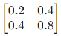

Matrix Multiplication as Transformation and Interpretation of Low Rank Matrices
Matrix multiplication as transformation
When a vector is multiplied by a suitable matrix, the operation essentially transforms the original vector into a new vector. This can be illustrated by the following example. The dimension of the resultant vector may also change (though it does not in this example).
Necessary imports:
import numpy as np
import matplotlib.pyplot as plt
import matplotlib.patches as mpatches
import seaborn as sns
from sympy import Eq,Matrix,MatMulCreating a vector and a transformation matrix
A = np.array([[2,1],[1,4]])
x = np.array([1,1])
Ax = A @ x
Eq(Matrix(Ax),MatMul(Matrix(A),Matrix(x)),evaluate=False)A function to plot arrows
def plot_arrow(ax,v,color,label):
arrow = mpatches.FancyArrowPatch((0,0),(v[0],v[1]),mutation_scale=9,color=color,label=label)
ax.add_patch(arrow)
ax.legend(bbox_to_anchor=(1.6,1),borderaxespad=0)A function to compute the transformed vector
def plot_transform(A,x):
Ax = A @ x
fig, ax = plt.subplots()
plot_arrow(ax,x,"k",f"Original Vector x: {x}")
plot_arrow(ax,Ax,"g",f"Transformed vector Ax: {Ax}")
plt.xlim((-5,5))
plt.ylim((-5,5))
plt.grid(alpha=0.1)
ax.set_aspect("equal")Using the above functions
plot_transform(np.array([[2.0,1.0],[1.0,4.0]]),np.array([1.0,1.0]))Using matrix transformation to rotate a vector
Defining the required function
def plot_rot(theta,v):
c = np.cos(theta)
s = np.sin(theta)
rot_mat = np.array([[c,-s],[s,c]])
w = rot_mat @ v
fig, ax = plt.subplots()
plot_arrow(ax,v,"k",f"Original vector: {v}")
plot_arrow(ax,w,"g",f"Vector on rotation: {w}")
plt.xlim((-6,6))
plt.ylim((-6,6))
plt.grid(alpha=0.4)
ax.set_aspect("equal")Using the function to rotate [3.0 5.0] by 60 degrees anti-clockwise
plot_rot(np.pi/3,np.array([3.0,5.0]))Matrix multiplication as transformation
Rank of a matrix is the minimum number of linearly independent rows and columns or the number of non-zero eigenvalues in case of a square matrix.
Consider the low rank matrix:
Defining the function:
def plot_lr(v,slope):
A1 = np.array([1.0, 2.0])
A = np.vstack((A1,slope*A1)) # The low rank matrix
x = np.arange(-6,6,0.01)
y = slope*x
plot_transform(A,v)
plt.plot(x,y,lw=5,alpha=0.4,label=f"y = {slope}x, Column Space of A")
plt.legend(bbox_to_anchor=(1,1),borderaxespad=0)Lets transform the vector [1.0 2.0] using the above transformation matrix:
plot_lr(np.array([1.0, 2.0]),4)
plt.tight_layout()Importance of rowspace, columnspace and nullspace in low rank matrix transformations
A = np.array([[1.0,2.0],[4.0,8.0]])
print("The transformation matrix involved is :")
Matrix(A)print("The rowspace of this matrix is spanned by : ")
Matrix(np.array([1.0,2.0]))print("The nullspace of a matrix is always perpendicular to the rowspace.")
print("The nullspace of matrix A is spaned by : ")
Matrix(np.array([-2.0,1.0]))print("Any vector in the nullspace is converted to a zero matrix after transformation.")
plot_lr(np.array([2.0,-1.0]),4)
plt.plot(x,-0.5*x,lw=5,alpha=0.4,label=f"y = {-0.5}x, Nullspace of A",color="g")
x = np.arange(-6,6,0.01)
plt.legend(bbox_to_anchor=(1,1), borderaxespad=0)
plt.tight_layout()Consider the vector v = [1.0, 1.0] and the same low rank transformation matrix as above.
The matrix obtained on transformation is:
The projection of v along the rowspace of A is:
Step 1: Finding the projection matrix:
r = np.array([1.0, 2.0])
proj = np.outer(r,r)
proj = proj / np.inner(r,r)
Matrix(proj)The projection matrix is: 
Step 2: Finding the projection of v along the rowspace of A
b = np.array([1.0,1.0])
v = proj @ b
Matrix(v)The matrix obtained on transformation of this projection vector is:
Av = A @ v
Eq(MatMul(Matrix(A),Matrix(v)),Matrix(Av),evaluate=False)We notice that this is the same as the matrix obtained before.
Learnings:
Any vector can be written as the vector sum of the projection on the rowspace and projection perpendicular to the rowspace (ie; in the nullspace). Only the component along the rowspace gets transformed to a non-zero matrix, the transformation of the component in the nullspace is always a zero matrix.
Analogy to PCA: As all vectors after transformation lie in the column space of A, this can be thought of as dimensionality reduction where there is a change in dimension from the initial vector space to the dimension of the column space of the transformation matrix